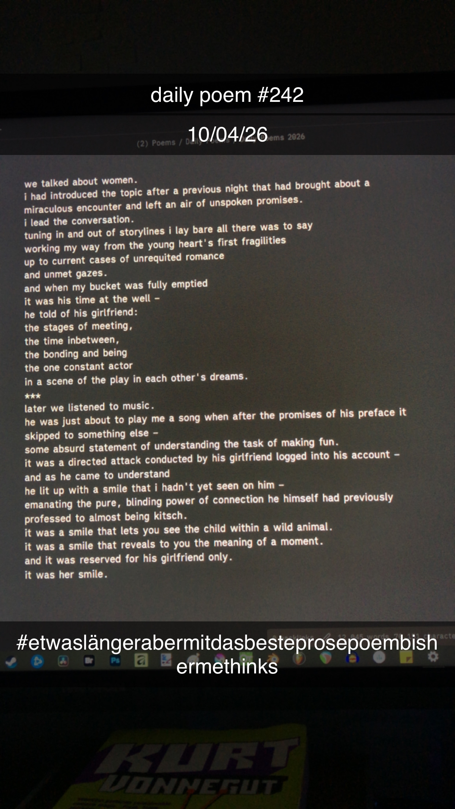

her smile.
[242]we talked about women.
i had introduced the topic after a previous night that had brought about a miraculous encounter and left an air of unspoken promises.
i lead the conversation.
tuning in and out of storylines i lay bare all there was to say
working my way from the young heart's first fragilities
up to current cases of unrequited romance
and unmet gazes.
and when my bucket was fully emptied
it was his time at the well –
he told of his girlfriend:
the stages of meeting,
the time inbetween,
the bonding and being
the one constant actor
in a scene of the play in each other's dreams.
***
later we listened to music.
he was just about to play me a song when after the promises of his preface it skipped to something else –
some absurd statement of understanding the task of making fun.
it was a directed attack conducted by his girlfriend logged into his account –
and as he came to understand
he lit up with a smile that i hadn't yet seen on him –
emanating the pure, blinding power of connection he himself had previously professed to almost being kitsch.
it was a smile that lets you see the child within a wild animal.
it was a smile that reveals to you the meaning of a moment.
and it was reserved for his girlfriend only.
it was her smile.

Anmerkungen
sehr nicer abend mit marlo gewesen, und das war eine beobachtung eines moments, der genau so stattgefunden hat